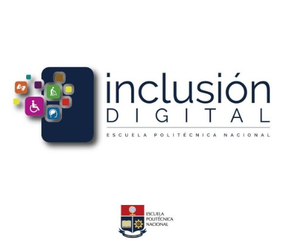

Proyecto: Inclusión Digital
Durante mi tercer semestre, participé en el proyecto Inclusión Digital , liderado por el LudoLab (Laboratorio de Sistemas de Información e Inclusión Digital) de la Escuela Politécnica Nacional. Este proyecto tiene como objetivo facilitar la integración tecnológica de los sectores más vulnerables, brindándoles herramientas que les permitan empoderarse en un mundo cada vez más interconectado.
Mi labor consistió en impartir clases virtuales dirigidas a personas en situación de atención prioritaria y a docentes del Ministerio de Educación. Trabajamos en un entorno colaborativo, buscando que cada participante se sintiera acompañado, apoyado y motivado durante su aprendizaje. Acompañé a dos docentes del MINEDU, brindándoles capacitación en herramientas de Google, plataformas para videoconferencias y recursos digitales, lo que les permitió preparar sus clases de manera más efectiva. Esto mejoró la experiencia educativa que ofrecen a sus estudiantes, facilitando una enseñanza más dinámica e interactiva.
Esta experiencia fue muy valiosa para mí, ya que no solo fortalecí mis habilidades de comunicación y docencia, sino que también desarrollé una conciencia social sobre la brecha digital. Comprendí que como futuro ingeniero puedo contribuir activamente a reducir esa desigualdad, acercando la tecnología a quienes más la necesitan.